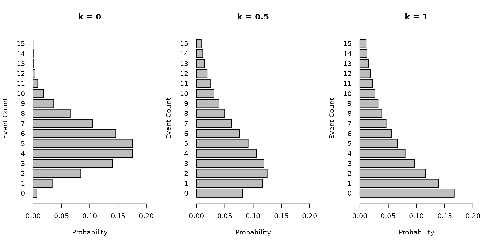
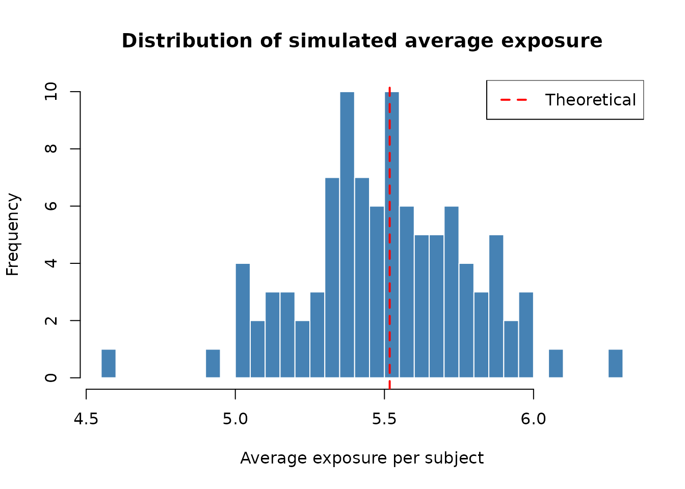

Sample size calculation for negative binomial outcomes
Source:vignettes/sample-size-nbinom.Rmd
sample-size-nbinom.RmdThis vignette describes the methodology used in the
sample_size_nbinom() function for calculating sample sizes
when comparing two treatment groups with negative binomial outcomes. We
present the notation, compare the underlying methods from the
literature, derive the average exposure calculations, discuss
statistical information, and provide simulation verification.
Notation
We use the following notation throughout this vignette and the package documentation.
| Symbol | Description |
|---|---|
| \lambda_g | Event rate (events per unit time) for group g (g = 1 for control, g = 2 for treatment) |
| k (or k_g) | Dispersion parameter such that \mathrm{Var}(Y) = \mu + k \mu^2; equivalent
to 1/\texttt{size} in R’s
rnbinom
|
| t_i | Exposure (follow-up) time for subject i |
| \bar{t}_g | Average exposure time for group g: \bar{t}_g = \mathrm{E}[t_i \mid \text{group } g] |
| \mu_{g} = \lambda_g \bar{t}_g | Expected event count per subject in group g |
| \theta = \log(\lambda_2 / \lambda_1) | Log rate ratio (treatment effect) |
| \theta_0 = \log(\text{rr}_0) | Log rate ratio under the null hypothesis |
| p_g = n_g / n_{\text{total}} | Allocation proportion for group g |
| r = n_2 / n_1 | Allocation ratio |
| Q_g = \mathrm{E}[t^2_g] / (\mathrm{E}[t_g])^2 | Variance inflation factor for variable follow-up in group g |
| \mathcal{I} | Statistical information: \mathcal{I} = 1 / \mathrm{Var}(\hat\theta) |
| z_\alpha, z_\beta | Standard normal quantiles at levels \alpha and \beta |
Methodology
We wish to test for differences in rates of recurrent events between two treatment groups using a negative binomial model to account for overdispersion. The underlying test evaluates the log rate ratio \theta = \log(\lambda_2 / \lambda_1) between the two groups. The usual null hypothesis is H_0\!: \theta \ge \theta_0 with \theta_0 = 0 (i.e., equal rates) and a one-sided alternative H_1\!: \theta < 0 (treatment reduces the event rate). Non-inferiority or super-superiority tests can also be performed by specifying \theta_0 \ne 0.
Negative binomial distribution
We assume the outcome Y for a subject with exposure time t follows a negative binomial distribution with mean \mu = \lambda t and dispersion parameter k, such that the variance is:
\mathrm{Var}(Y) = \mu + k \mu^2
Note that in R’s rnbinom parameterization, k = 1/\texttt{size}. When k = 0, the negative binomial reduces to the
Poisson distribution.
Gamma-Poisson mixture motivation
The negative binomial distribution arises naturally as a Gamma-Poisson mixture. For each subject i, suppose the subject-specific event rate \Lambda_i follows a Gamma distribution: \Lambda_i \sim \text{Gamma}\!\left(\text{shape} = \frac{1}{k},\; \text{rate} = \frac{1}{k\lambda}\right) so that \mathrm{E}[\Lambda_i] = \lambda and \mathrm{Var}(\Lambda_i) = k\lambda^2.
Given \Lambda_i, the event count over exposure time t_i is Poisson: Y_i \mid \Lambda_i \sim \text{Poisson}(\Lambda_i\, t_i)
Marginalizing over \Lambda_i, the unconditional distribution of Y_i is negative binomial with: \mathrm{Var}(Y_i) = \mathrm{E}[\Lambda_i t_i] + \mathrm{Var}(\Lambda_i t_i) = \lambda t_i + k\lambda^2 t_i^2 = \mu_i + k\mu_i^2
This connects the event rate \lambda (hypothesis testing framework) with the expected count \mu (negative binomial parameterization).
Graphical illustration
The following panel illustrates the distribution of event counts with mean \mu = 5 for dispersion parameters k \in \{0, 0.5, 1\}. As k increases, the variance increases and the distribution becomes more spread out.
par(mfrow = c(1, 3))
k_values <- c(0, 0.5, 1)
for (k in k_values) {
mu <- 5
x <- 0:15
if (k == 0) {
probs <- dpois(x, lambda = mu)
} else {
size <- 1 / k
probs <- dnbinom(x, size = size, mu = mu)
}
barplot(probs,
names.arg = x, horiz = TRUE, main = paste("k =", k),
xlab = "Probability", ylab = "Event Count", las = 1, xlim = c(0, 0.2)
)
}
Sample size formula
The sample size formula is based on the asymptotic normality of the maximum likelihood estimator of the log rate ratio \hat\theta, using a Wald test. The required sample size for group 1 is:
n_1 = \frac{(z_{\alpha/s} + z_{\beta})^2 \cdot \tilde{V}}{(\theta - \theta_0)^2}
where n_2 = r \cdot n_1, n_{\text{total}} = n_1 + n_2, and \tilde{V} is the per-subject variance factor:
\tilde{V} = \left(\frac{1}{\mu_1} + k_1\right) + \frac{1}{r}\left(\frac{1}{\mu_2} + k_2\right)
Here \mu_g = \lambda_g \bar{t}_g is the expected event count per subject in group g, and k_g is the (possibly inflated) dispersion parameter for group g.
In the simplest case where both groups share a common dispersion k and a common average exposure \bar{t}, with equal allocation (r = 1, p_1 = p_2 = 1/2), this simplifies to:
n_{\text{total}} = \frac{(z_{\alpha/s} + z_{\beta})^2 \left[\left(\frac{1}{\mu_1} + k\right) + \left(\frac{1}{\mu_2} + k\right)\right]}{(\theta - \theta_0)^2}
Relationship between Zhu-Lakkis, Friede-Schmidli, and Mutze et al.
The sample size formula implemented in
sample_size_nbinom() corresponds to Method
3 of Zhu and Lakkis (2014), which
is the Wald test for the log rate ratio under a negative binomial model
with a log link and an exposure offset. This same test statistic and
variance formula are used by Friede and Schmidli
(2010) in the context of blinded sample size reestimation and by
Mütze et al. (2019) for group sequential
designs.
What the three references share:
All three references use the same underlying asymptotic result for the variance of the MLE of the log rate ratio. For a single subject i in group g with exposure t_i and expected count \mu_i = \lambda_g t_i, the Fisher information contribution is:
\mathcal{I}_i = \frac{\mu_i}{1 + k\,\mu_i}
The total information for the log rate ratio is:
\mathcal{I} = \frac{1}{1/W_1 + 1/W_2}, \quad W_g = \sum_{i \in \text{group } g} \frac{\mu_i}{1 + k\,\mu_i}
When all subjects in a group have the same exposure \bar{t}, this simplifies to W_g = n_g \cdot \mu_g / (1 + k\,\mu_g), giving the familiar formula above.
How the references differ:
| Aspect | Zhu and Lakkis (2014) | Friede and Schmidli (2010) | Mütze et al. (2019) |
|---|---|---|---|
| Focus | Fixed sample size calculation | Blinded sample size reestimation | Group sequential designs |
| Methods compared | Five different test statistics (Methods 1–5) | One method (equivalent to Zhu Method 3) | One method (same Wald test) |
| Dispersion | Common k across groups | Common k; estimated from blinded data | Common k |
| Exposure | Fixed \bar{t} for all subjects | Fixed \bar{t} | Fixed \bar{t} |
| Key contribution | Systematic comparison of NB sample size methods | Blinded estimation of nuisance parameters (k, \lambda) during a trial | Extension to interim analyses with spending functions |
The sample_size_nbinom() function extends these methods
by allowing:
- Group-specific dispersion (k_1 \ne k_2),
- Variable exposure across subjects (piecewise accrual, dropout, max follow-up),
- Variance inflation (Q factor) to account for non-constant exposure, following the approach in Zhu and Lakkis (2014), and
- Event gaps that reduce effective exposure.
Non-inferiority and super-superiority
The parameter rr0 (\theta_0) allows for testing non-inferiority
or super-superiority hypotheses. The null hypothesis is H_0\!: \lambda_2 / \lambda_1 \ge \text{rr}_0
(assuming lower rates are better).
- Superiority (default): \text{rr}_0 = 1 (\theta_0 = 0). We test if the treatment rate is lower than the control rate.
- Non-inferiority: \text{rr}_0 > 1 (e.g., 1.1). We test if the treatment rate is not worse than the control rate by more than a specified margin.
- Super-superiority: \text{rr}_0 < 1 (e.g., 0.8). We test if the treatment rate is better than the control rate by at least a specified margin.
Average exposure
In practice, subjects have variable follow-up times due to staggered
enrollment, administrative censoring at the end of the study, dropout,
and maximum follow-up caps. The sample size formula requires the
expected exposure \bar{t}_g =
\mathrm{E}[t_i \mid \text{group } g] for each group. This section
derives the average exposure computation implemented in
sample_size_nbinom().
Setup
Let T denote the total trial duration. Suppose recruitment occurs in J segments, where segment j has accrual rate R_j and duration D_j. The start time of segment j is S_j = \sum_{i=1}^{j-1} D_i (with S_0 = 0). The expected number of patients in segment j is N_j = R_j D_j.
A patient enrolled at calendar time s has a potential follow-up time of u = T - s before administrative censoring. For patients in segment j, the potential follow-up ranges from u_{\min} = T - (S_j + D_j) to u_{\max} = T - S_j.
Calendar exposure without dropout
When there is no dropout (\delta =
0), a patient enrolled at time s
is followed for exactly u = T - s time
units (or until max_followup, whichever comes first). Under
uniform enrollment within each segment, the average follow-up for
segment j is:
E_j = \frac{u_{\min} + u_{\max}}{2} = T - S_j - \frac{D_j}{2}
This is simply the midpoint of the follow-up range for that segment.
Calendar exposure with dropout
When the dropout rate \delta > 0 (modeled as an exponential hazard), the expected exposure for a patient with potential follow-up u is:
m(u) = \mathrm{E}[\min(u, \text{dropout time})] = \frac{1 - e^{-\delta u}}{\delta}
The average exposure for segment j is obtained by averaging m(u) over the uniform distribution of enrollment times within the segment. This yields:
\bar{t}_j = \frac{1}{D_j}\int_{u_{\min}}^{u_{\max}} m(u)\, du = \frac{1}{\delta} - \frac{e^{-\delta u_{\min}} - e^{-\delta u_{\max}}}{\delta^2 D_j}
Note that as \delta \to 0, this reduces to (u_{\min} + u_{\max})/2, consistent with the no-dropout case.
Maximum follow-up
If max_followup (F) is
specified, the follow-up time is capped at F for each patient. The expected exposure for
a patient with potential follow-up u
becomes:
m^*(u) = \mathrm{E}[\min(u, F, \text{dropout time})]
For segment j, three cases arise:
- No truncation (u_{\max} \le F): All patients have potential follow-up \le F. The calculation is as above.
- Full truncation (u_{\min} \ge F): All patients have potential follow-up \ge F, so each patient’s exposure is \min(F, \text{dropout time}), giving m^*(F) = (1 - e^{-\delta F})/\delta (or simply F when \delta = 0).
- Partial truncation (u_{\min} < F < u_{\max}): Patients enrolled earlier (with u \ge F) are capped, while later enrollees are not. The average is a weighted combination:
\bar{t}_j = \frac{(u_{\max} - F)\, m^*(F) + \int_{u_{\min}}^{F} m(u)\, du}{D_j}
Weighted average across segments
The overall average exposure for group g is:
\bar{t}_g = \frac{\sum_{j=1}^{J} N_j\, \bar{t}_{j,g}}{\sum_{j=1}^{J} N_j}
When dropout rates are the same for both groups, \bar{t}_1 = \bar{t}_2. When they differ, each group has its own average exposure.
Group-specific parameters
The function supports specifying dropout_rate and
max_followup as vectors of length 2, corresponding to the
control and treatment groups respectively. When these differ, the
average exposure \bar{t}_g, the second
moment \mathrm{E}[t_g^2], and the
variance inflation factor Q_g are all
computed separately for each group.
Variance inflation for variable follow-up (Q factor)
When follow-up times vary across subjects, using \bar{t} alone in the variance formula underestimates the true variance. This is because the negative binomial variance depends non-linearly on exposure through the k\mu^2 = k\lambda^2 t^2 term.
Zhu and Lakkis (2014) derive a correction factor:
Q_g = \frac{\mathrm{E}[t_g^2]}{(\mathrm{E}[t_g])^2} \ge 1
by Jensen’s inequality. The effective dispersion used in the sample size formula is k_{g,\text{adj}} = k_g \cdot Q_g.
When exposure is constant (t_i = \bar{t} for all i), Q = 1 and no adjustment is needed. Variable follow-up inflates Q above 1, increasing the required sample size.
Computing \mathrm{E}[t^2]: The second moment is computed analogously to \mathrm{E}[t] by integrating m_2(u) = \mathrm{E}[\min(u, \text{dropout time})^2] over the enrollment distribution. Without dropout, m_2(u) = u^2. With dropout rate \delta:
m_2(u) = \frac{2}{\delta^2}\left(1 - e^{-\delta u}(1 + \delta u)\right)
The average of m_2(u) across
enrollment segments (with appropriate handling of
max_followup truncation) gives \mathrm{E}[t^2_g].
Event gaps
In some recurrent event trials, there is a mandatory “dead time” or gap of duration g after each event, during which no new events can occur (e.g., a recovery period). This reduces the effective time at risk.
Naive approximation. For a single subject with fixed event rate \lambda and gap g, the long-run effective rate from renewal theory is:
\lambda_{\text{naive}} = \frac{\lambda}{1 + \lambda g}
Jensen’s inequality correction. In the negative binomial model, subjects do not share the same rate. Each subject’s rate \Lambda_i is drawn from a Gamma distribution with mean \lambda and variance k\lambda^2 (the Gamma-Poisson mixture). The population-level effective rate is \mathrm{E}[\Lambda_i / (1 + \Lambda_i g)], which by Jensen’s inequality is strictly less than \lambda / (1 + \lambda g) because f(x) = x/(1+xg) is concave.
The naive formula overestimates the effective rate (and thus the expected event count), leading to underestimated variance and slightly underpowered designs. The bias scales with both the dispersion k and the gap g.
To correct for this, sample_size_nbinom() applies a
second-order Taylor expansion of f(\Lambda) around \mathrm{E}[\Lambda] = \lambda:
\mathrm{E}\!\left[\frac{\Lambda}{1+\Lambda g}\right] \approx \frac{\lambda}{1+\lambda g} + \frac{f''(\lambda)}{2}\,\mathrm{Var}(\Lambda) = \frac{\lambda}{1+\lambda g} \left(1 - \frac{k\lambda g}{(1+\lambda g)^2}\right)
where f''(\lambda) = -2g/(1+\lambda g)^3 and \mathrm{Var}(\Lambda) = k\lambda^2. This corrected effective rate is used in the sample size formula:
\mu_g = \lambda_{g,\text{eff}} \cdot \bar{t}_g
The function also reports the at-risk exposure, which is the calendar exposure reduced by the expected gap time:
\bar{t}_{g,\text{risk}} = \frac{\bar{t}_g}{1 + \lambda_g \cdot g}
Since the gap correction depends on \lambda_g, the at-risk exposure differs between groups even when the calendar exposure is the same.
Magnitude of the correction. The following table illustrates the correction factor 1 - k\lambda g / (1+\lambda g)^2 for selected parameter combinations. The correction is negligible when k or g is small, but can reach 5–10% for high-dispersion, high-rate, large-gap scenarios.
# Show correction magnitude for various parameter combos
params <- expand.grid(
lambda = c(0.3, 0.5, 1.0, 2.0),
k = c(0.1, 0.3, 0.5, 1.0),
gap = c(0.25, 0.5, 1.0)
)
params$naive_eff <- params$lambda / (1 + params$lambda * params$gap)
params$correction <- 1 - params$k * params$lambda * params$gap /
(1 + params$lambda * params$gap)^2
params$corrected_eff <- params$naive_eff * params$correction
params$pct_reduction <- round(100 * (1 - params$correction), 2)
# Show a subset
subset_df <- params[params$pct_reduction > 0.5, ]
subset_df <- subset_df[order(-subset_df$pct_reduction), ]
knitr::kable(
head(subset_df[, c("lambda", "k", "gap", "naive_eff", "corrected_eff", "pct_reduction")], 12),
digits = 4, row.names = FALSE,
col.names = c("lambda", "k", "gap", "Naive eff. rate", "Corrected eff. rate", "Reduction (%)")
)| lambda | k | gap | Naive eff. rate | Corrected eff. rate | Reduction (%) |
|---|---|---|---|---|---|
| 2.0 | 1.0 | 0.50 | 1.0000 | 0.7500 | 25.00 |
| 1.0 | 1.0 | 1.00 | 0.5000 | 0.3750 | 25.00 |
| 2.0 | 1.0 | 0.25 | 1.3333 | 1.0370 | 22.22 |
| 1.0 | 1.0 | 0.50 | 0.6667 | 0.5185 | 22.22 |
| 0.5 | 1.0 | 1.00 | 0.3333 | 0.2593 | 22.22 |
| 2.0 | 1.0 | 1.00 | 0.6667 | 0.5185 | 22.22 |
| 0.3 | 1.0 | 1.00 | 0.2308 | 0.1898 | 17.75 |
| 1.0 | 1.0 | 0.25 | 0.8000 | 0.6720 | 16.00 |
| 0.5 | 1.0 | 0.50 | 0.4000 | 0.3360 | 16.00 |
| 2.0 | 0.5 | 0.50 | 1.0000 | 0.8750 | 12.50 |
| 1.0 | 0.5 | 1.00 | 0.5000 | 0.4375 | 12.50 |
| 0.3 | 1.0 | 0.50 | 0.2609 | 0.2313 | 11.34 |
Simulation verification of average exposure
We verify the average exposure computation by simulating trials with known parameters and comparing the simulated average exposure to the theoretical prediction.
set.seed(42)
# Design parameters
lambda1 <- 0.5
lambda2 <- 0.3
dispersion <- 0.3
dropout_rate_val <- 0.05
max_followup_val <- 8
trial_duration <- 12
# Piecewise accrual: 5/month for 4 months, then 15/month for 4 months
accrual_rate_vec <- c(5, 15)
accrual_duration_vec <- c(4, 4)
# Theoretical calculation
design <- sample_size_nbinom(
lambda1 = lambda1, lambda2 = lambda2, dispersion = dispersion,
power = 0.8,
accrual_rate = accrual_rate_vec,
accrual_duration = accrual_duration_vec,
trial_duration = trial_duration,
dropout_rate = dropout_rate_val,
max_followup = max_followup_val
)
theo_exposure <- design$exposure[1] # Same for both groups (same dropout)
# Simulate many trials and compute average exposure
enroll_rate <- data.frame(rate = design$accrual_rate, duration = accrual_duration_vec)
fail_rate <- data.frame(
treatment = c("Control", "Experimental"),
rate = c(lambda1, lambda2),
dispersion = dispersion
)
dropout <- data.frame(
treatment = c("Control", "Experimental"),
rate = rep(dropout_rate_val, 2),
duration = rep(100, 2)
)
n_sims <- 100
sim_exposures <- numeric(n_sims)
for (i in seq_len(n_sims)) {
sim_data <- nb_sim(
enroll_rate = enroll_rate,
fail_rate = fail_rate,
dropout_rate = dropout,
max_followup = max_followup_val,
n = design$n_total
)
cut <- cut_data_by_date(sim_data, cut_date = trial_duration)
sim_exposures[i] <- mean(cut$tte_total)
}
cat("Theoretical average exposure:", round(theo_exposure, 4), "\n")
#> Theoretical average exposure: 5.5176
cat("Simulated average exposure (mean over", n_sims, "trials):", round(mean(sim_exposures), 4), "\n")
#> Simulated average exposure (mean over 100 trials): 5.5052
cat("Simulation SE:", round(sd(sim_exposures) / sqrt(n_sims), 4), "\n")
#> Simulation SE: 0.028
cat("Relative difference:", round(100 * (mean(sim_exposures) - theo_exposure) / theo_exposure, 2), "%\n")
#> Relative difference: -0.23 %
# Histogram of simulated average exposures
hist(sim_exposures,
breaks = 30, col = "steelblue", border = "white",
main = "Distribution of simulated average exposure",
xlab = "Average exposure per subject"
)
abline(v = theo_exposure, col = "red", lwd = 2, lty = 2)
legend("topright", legend = c("Theoretical"), col = "red", lty = 2, lwd = 2)
The theoretical prediction from sample_size_nbinom()
closely matches the simulation average, confirming the correctness of
the average exposure computation under piecewise accrual, dropout, and
maximum follow-up truncation.
Statistical information
The statistical information \mathcal{I} for the log rate ratio \theta is the inverse of the variance of the MLE \hat\theta. It plays a central role in sample size calculation, group sequential design, and information monitoring during a trial.
Per-subject Fisher information
For a single subject i in group g with exposure t_i and expected count \mu_i = \lambda_g t_i, the contribution to the Fisher information is (from the negative binomial log-likelihood with log link):
\mathcal{I}_i = \frac{\mu_i}{1 + k\,\mu_i}
This formula has intuitive limits:
- When k = 0 (Poisson): \mathcal{I}_i = \mu_i = \lambda t_i (information is proportional to expected events).
- When k\mu_i \gg 1 (large overdispersion): \mathcal{I}_i \approx 1/k (information saturates regardless of exposure).
Total information
The total statistical information for the log rate ratio is:
\mathcal{I} = \frac{1}{\mathrm{Var}(\hat\theta)} = \frac{1}{1/W_1 + 1/W_2}
where W_g = \sum_{i \in \text{group } g} \mathcal{I}_i is the total information contributed by group g.
When all subjects in a group have the same average exposure \bar{t}_g:
W_g = n_g \cdot \frac{\mu_g}{1 + k_g \mu_g} = \frac{n_g}{1/\mu_g + k_g}
and thus:
\mathrm{Var}(\hat\theta) = \frac{1/\mu_1 + k_1}{n_1} + \frac{1/\mu_2 + k_2}{n_2}
This is exactly the variance used in the sample size formula.
Information in practice: blinded and unblinded estimation
During a clinical trial, the statistical information can be estimated at interim analyses for information monitoring. The package provides four variants:
| Method | Blinding | Estimation | Function |
|---|---|---|---|
| Blinded ML | Blinded | Maximum likelihood via MASS::glm.nb()
|
calculate_blinded_info() |
| Unblinded ML | Unblinded | Maximum likelihood via MASS::glm.nb()
|
mutze_test() (SE gives info) |
| Blinded MoM | Blinded | Method of moments | estimate_nb_mom() |
| Unblinded MoM | Unblinded | Method of moments | estimate_nb_mom(group = "treatment") |
Blinded estimation (Friede and Schmidli 2010) fits a single model to pooled data (ignoring treatment assignment) and then “splits” the estimated overall rate \hat\lambda into group-specific rates using the planned rate ratio: \hat\lambda_1 = \hat\lambda / (p_1 + p_2 \cdot \text{RR}_{\text{plan}}) and \hat\lambda_2 = \hat\lambda_1 \cdot \text{RR}_{\text{plan}}. This preserves the blind while allowing nuisance parameter (k) re-estimation.
Unblinded estimation fits a model with a treatment covariate, directly estimating the log rate ratio and its standard error. The information is \mathcal{I} = 1/\text{SE}^2.
Connection to sample size
The sample size formula can be expressed in terms of information. The target information for a fixed design is:
\mathcal{I}_{\text{target}} = \frac{(z_{\alpha/s} + z_\beta)^2}{(\theta - \theta_0)^2}
The sample size is then the smallest n_{\text{total}} such that the expected information at the end of the trial exceeds \mathcal{I}_{\text{target}}.
Examples
Basic calculation (Zhu and Lakkis 2014)
Calculate sample size for:
- Control rate \lambda_1 = 0.5
- Treatment rate \lambda_2 = 0.3
- Dispersion k = 0.1
- Power = 80%
- Alpha = 0.025 (one-sided)
- Accrual over 12 months
- Trial duration 12 months (implying average exposure of 6 months)
sample_size_nbinom(
lambda1 = 0.5,
lambda2 = 0.3,
dispersion = 0.1,
power = 0.8,
alpha = 0.025,
sided = 1,
accrual_rate = 10, # arbitrary, just for average exposure
accrual_duration = 12,
trial_duration = 12
)
#> Sample size for negative binomial outcome
#> ==========================================
#>
#> Sample size: n1 = 35, n2 = 35, total = 70
#> Expected events: 168.0 (n1: 105.0, n2: 63.0)
#> Power: 80%, Alpha: 0.025 (1-sided)
#> Rates: control = 0.5000, treatment = 0.3000 (RR = 0.6000)
#> Dispersion: 0.1000, Avg exposure (calendar): 6.00
#> Accrual: 12.0, Trial duration: 12.0Piecewise constant accrual
Consider a trial where recruitment ramps up:
- 5 patients/month for the first 3 months
- 10 patients/month for the next 3 months
- Total trial duration is 12 months
The function automatically calculates the average exposure based on this accrual pattern.
sample_size_nbinom(
lambda1 = 0.5,
lambda2 = 0.3,
dispersion = 0.1,
power = 0.8,
accrual_rate = c(5, 10),
accrual_duration = c(3, 3),
trial_duration = 12
)
#> Sample size for negative binomial outcome
#> ==========================================
#>
#> Sample size: n1 = 26, n2 = 26, total = 52
#> Expected events: 176.8 (n1: 110.5, n2: 66.3)
#> Power: 80%, Alpha: 0.025 (1-sided)
#> Rates: control = 0.5000, treatment = 0.3000 (RR = 0.6000)
#> Dispersion: 0.1000, Avg exposure (calendar): 8.50
#> Accrual: 6.0, Trial duration: 12.0Accrual with dropout and max follow-up
Same design as above, but with a 5% dropout rate per unit time and a maximum follow-up of 6 months.
sample_size_nbinom(
lambda1 = 0.5,
lambda2 = 0.3,
dispersion = 0.1,
power = 0.8,
accrual_rate = c(5, 10),
accrual_duration = c(3, 3),
trial_duration = 12,
dropout_rate = 0.05,
max_followup = 6
)
#> Sample size for negative binomial outcome
#> ==========================================
#>
#> Sample size: n1 = 38, n2 = 38, total = 76
#> Expected events: 157.6 (n1: 98.5, n2: 59.1)
#> Power: 80%, Alpha: 0.025 (1-sided)
#> Rates: control = 0.5000, treatment = 0.3000 (RR = 0.6000)
#> Dispersion: 0.1000, Avg exposure (calendar): 5.18
#> Dropout rate: 0.0500
#> Accrual: 6.0, Trial duration: 12.0
#> Max follow-up: 6.0Group-specific dropout rates
Suppose the control group has a higher dropout rate (10%) than the treatment group (5%).
sample_size_nbinom(
lambda1 = 0.5,
lambda2 = 0.3,
dispersion = 0.1,
power = 0.8,
accrual_rate = c(5, 10),
accrual_duration = c(3, 3),
trial_duration = 12,
dropout_rate = c(0.10, 0.05), # Control, Treatment
max_followup = 6
)
#> Sample size for negative binomial outcome
#> ==========================================
#>
#> Sample size: n1 = 40, n2 = 40, total = 80
#> Expected events: 152.4 (n1: 90.2, n2: 62.2)
#> Power: 80%, Alpha: 0.025 (1-sided)
#> Rates: control = 0.5000, treatment = 0.3000 (RR = 0.6000)
#> Dispersion: 0.1000, Avg exposure (calendar): 4.51 (n1), 5.18 (n2)
#> Dropout rate: 0.1000 (n1), 0.0500 (n2)
#> Accrual: 6.0, Trial duration: 12.0
#> Max follow-up: 6.0Calculating power for fixed design
Using the accrual rates and design from the previous example, suppose
we want to calculate the power if the treatment effect is smaller (\lambda_2 = 0.4 instead of 0.3). We use the accrual_rate
computed in the previous step.
# Store the result from the previous calculation
design_result <- sample_size_nbinom(
lambda1 = 0.5,
lambda2 = 0.3,
dispersion = 0.1,
power = 0.8,
accrual_rate = c(5, 10),
accrual_duration = c(3, 3),
trial_duration = 12,
dropout_rate = 0.05,
max_followup = 6
)
# Use the computed accrual rates to calculate power for a smaller effect size
sample_size_nbinom(
lambda1 = 0.5,
lambda2 = 0.4, # Smaller effect size
dispersion = 0.1,
power = NULL, # Request power calculation
accrual_rate = design_result$accrual_rate, # Use computed rates
accrual_duration = c(3, 3),
trial_duration = 12,
dropout_rate = 0.05,
max_followup = 6
)
#> Sample size for negative binomial outcome
#> ==========================================
#>
#> Sample size: n1 = 38, n2 = 38, total = 76
#> Expected events: 177.3 (n1: 98.5, n2: 78.8)
#> Power: 26%, Alpha: 0.025 (1-sided)
#> Rates: control = 0.5000, treatment = 0.4000 (RR = 0.8000)
#> Dispersion: 0.1000, Avg exposure (calendar): 5.18
#> Dropout rate: 0.0500
#> Accrual: 6.0, Trial duration: 12.0
#> Max follow-up: 6.0Unequal allocation
Sample size with a 2:1 allocation ratio (n_2 = 2 n_1).
sample_size_nbinom(
lambda1 = 0.5,
lambda2 = 0.3,
dispersion = 0.1,
ratio = 2,
accrual_rate = 10,
accrual_duration = 12,
trial_duration = 12
)
#> Sample size for negative binomial outcome
#> ==========================================
#>
#> Sample size: n1 = 40, n2 = 80, total = 120
#> Expected events: 264.0 (n1: 120.0, n2: 144.0)
#> Power: 95%, Alpha: 0.025 (1-sided)
#> Rates: control = 0.5000, treatment = 0.3000 (RR = 0.6000)
#> Dispersion: 0.1000, Avg exposure (calendar): 6.00
#> Accrual: 12.0, Trial duration: 12.0Example with event gap
Calculate sample size assuming a 20-day gap after each event (approx 0.055 years). Note how the at-risk exposure differs between groups because the group with the higher event rate (\lambda_1 = 2.0) spends more time in gap periods than the group with the lower rate (\lambda_2 = 1.0).
sample_size_nbinom(
lambda1 = 2.0,
lambda2 = 1.0,
dispersion = 0.1,
power = 0.8,
accrual_rate = 10,
accrual_duration = 12,
trial_duration = 12,
event_gap = 20 / 365.25
)
#> Sample size for negative binomial outcome
#> ==========================================
#>
#> Sample size: n1 = 9, n2 = 9, total = 18
#> Expected events: 147.4 (n1: 96.5, n2: 50.9)
#> Power: 80%, Alpha: 0.025 (1-sided)
#> Rates: control = 2.0000, treatment = 1.0000 (RR = 0.5000)
#> Dispersion: 0.1000, Avg exposure (calendar): 6.00
#> Avg exposure (at-risk): n1 = 5.41, n2 = 5.69
#> Event gap: 0.05
#> Accrual: 12.0, Trial duration: 12.0In this example, even though the calendar time is the same for both groups, the effective at-risk exposure is lower for Group 1 because they have more events and thus more gap time.